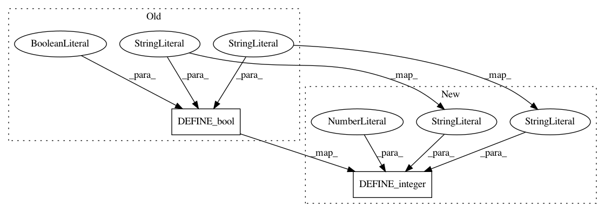

b33ab691edd877e7ec9a904b05c059f2ab316ca8,cloud_tpu/models/inception/inception_v3.py,,,#,35
Before Change
"log_device_placement", default_value=False,
docstring="Boolean to enable/disable log device placement")
tf.flags.DEFINE_bool(
"use_slim", default_value=False,
docstring="Boolean to choose between slim.dataset.Datasets and "
"data.Datasets for input pipeline")
tf.flags.DEFINE_integer(
"num_readers", default_value=8,
docstring="Number of readers for data set provider")
After Change
"This shuffling is done before any other operations. "
"Set to 0 to disable")
tf.flags.DEFINE_integer(
"followup_shuffle_buffer_size", default_value=128,
docstring="Number of elements from dataset that shuffler will sample from. "
"This shuffling is done after prefetching is done. "
"Set to 0 to disable")
FLAGS = tf.flags.FLAGS
In pattern: SUPERPATTERN
Frequency: 3
Non-data size: 2
Instances
Project Name: tensorflow/tpu
Commit Name: b33ab691edd877e7ec9a904b05c059f2ab316ca8
Time: 2017-09-24
Author: frankchn@google.com
File Name: cloud_tpu/models/inception/inception_v3.py
Class Name:
Method Name:
Project Name: tensorflow/tpu
Commit Name: 67bf296979bc456127826044df5ce196b9cc3126
Time: 2018-02-28
Author: 1517779+sb2nov@users.noreply.github.com
File Name: models/experimental/inception/inception_v2.py
Class Name:
Method Name:
Project Name: tensorflow/tpu
Commit Name: 67bf296979bc456127826044df5ce196b9cc3126
Time: 2018-02-28
Author: 1517779+sb2nov@users.noreply.github.com
File Name: models/experimental/inception/inception_v3.py
Class Name:
Method Name: